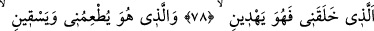
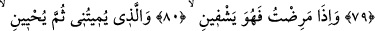
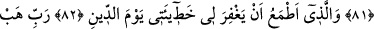
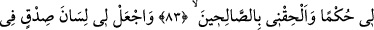
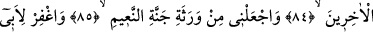
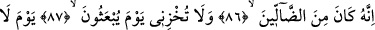
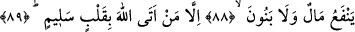

O GÜN,
NE MAL FAYDA VERİR
NE DE EVLÂT
78. Beni yaratan ve bana doğru yolu gösteren O’dur.
79. Beni yediren, içiren O’dur.
80. Hastalandığım zaman bana şifa veren O’dur.
81. Benim canımı alacak, sonra beni diriltecek O’dur.
82. Ve hesap günü hatalarımı bağışlayacağını umduğum O’dur.
83. Rabbim! Bana hikmet ver ve beni iyiler arasına kat.
84. Bana, sonra gelecekler içinde, iyilikle anılmak nasip eyle.
85. Beni, Naîm cennetinin vârislerinden kıl.
86. Babamı da bağışla (ona tevbe ve iman nasip et). Çünkü o sapıklardandır.
87. (İnsanların) diriltilecekleri gün, beni mahcup etme.
88. O gün, ne mal fayda verir ne de evlât.
89. Ancak Allâh’a kalb-i selîm (temiz bir kalp) ile gelenler (o günde fayda bulur).
“Beni yaratan” yokluktan varlığa getiren O’dur. Bu ifâde “âlemlerin Rabbi”nin
sıfatıdır. “ve bana doğru yolu gösteren” sadece “O’dur.” O sürekli olarak yeniden
yaratma ve ruh üfleyerek aralıksız bir hidâyet ile beni dünya ve âhiretin salâhına irşad
eder. Nitekim tâkip için olan atıf fâ’sı ve muzârî sıygası bunu haber verir. Çünkü
hidâyetin insana nisbetle başlangıcı, cenînin rahimden hayız kanını emmeye
sevkedilmesidir. Sonu ise insanın cennetin yolunu ve lezzetleriyle nimetlenmeyi
göstermektir.
“Bana doğru yolu gösteren O’dur” kavli, nübüvvet, velâyet ve hullet/dostluk